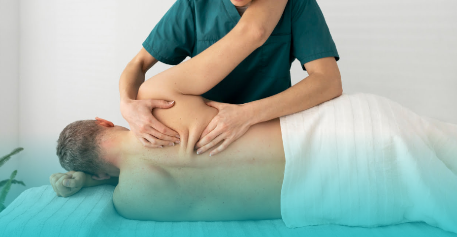
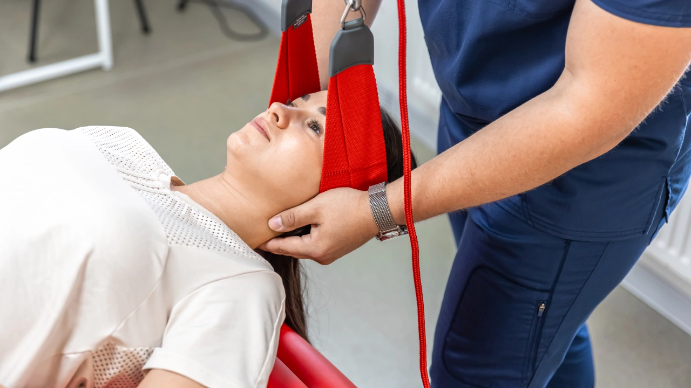

MVA Physiotherapy After a Car Accident
Pain, stiffness or reduced movement after a collision can affect driving, work and everyday activities. Can-Am provides one-on-one MVA physiotherapy in Crossfield to assess your injuries and build a recovery plan around your symptoms and goals.
Located in Crossfield • Serving Carstairs, Airdrie, Balzac and nearby communities.

Common problems after a collision
A car accident can affect more than one area of the body. Your assessment looks at what has changed since the collision and how those symptoms are affecting normal movement and daily activities.
Symptoms do not always feel the same immediately after an accident. If pain, stiffness or movement has changed since the collision, tell your physiotherapist during your assessment.

Your recovery starts with understanding what changed
Your first appointment starts with a conversation about the accident, your symptoms and the activities that have become difficult.
- 01 Talk about your symptoms and the collision
- 02 Assess movement, joints and muscles
- 03 Look at how symptoms affect work and daily activities
- 04 Explain the assessment findings
- 05 Build your treatment and exercise plan
Recovery is not only about a pain score. We also look at whether you are getting back to driving, working, sleeping, lifting, exercising and your normal daily activities.
What should I do after the accident?
The insurance process can feel confusing, especially if this is your first motor vehicle accident.
Contact your insurer
Report the accident and ask for your claim information and adjuster details when available.
Book your assessment
Book an MVA physiotherapy assessment so your symptoms, movement and function can be assessed.
Bring what you have
Bring your claim number, insurer and adjuster information, along with any forms or reports you already have.

Meet Your Physiotherapist
Ankit Patel
Physiotherapist & Clinic Owner
Ankit has worked in the fitness and rehabilitation industry for many years. His experience includes working with athletes and patients across gym settings, specialized clinics, home care and other rehabilitation environments.
He established Can-Am Physical Therapy to provide dedicated one-on-one, hands-on care and help patients improve function, independence and quality of life.
What Patients Say
Feedback from patients treated at Can-Am Physical Therapy & Rehab.
“He took the time to assess thoroughly, explain the diagnosis in a way that is easy to understand, and provide exercises that truly target the root of the problem.”
“instead of just dealing with symptoms, he worked on what caused the issue in the first place and gave me a plan to deal with it.”
“Ankit and staff are client focused, welcoming, and want to get to the bottom of the issue.”
MVA Physiotherapy in Crossfield
Can-Am Physical Therapy & Rehab provides motor vehicle accident physiotherapy from our clinic in Crossfield, Alberta.
Our Crossfield clinic also welcomes patients travelling from Carstairs, Airdrie, Balzac and nearby communities for car accident assessment and rehabilitation.
Crossfield, AB T0M 0S0

Frequently asked questions
What is MVA physiotherapy?
MVA physiotherapy is rehabilitation for injuries and symptoms related to a motor vehicle accident. Your physiotherapist assesses your movement, symptoms and function and builds a treatment plan around your needs and recovery goals.
Can physiotherapy help with whiplash after a car accident?
Physiotherapy can assess neck pain, stiffness, reduced movement and other symptoms that may occur with whiplash. Treatment depends on your assessment and individual symptoms.
Do I need to see a doctor before booking MVA physiotherapy?
A doctor's referral is generally not required to see a physiotherapist in Alberta. Insurance and claim requirements can vary, so check with your insurer if you are unsure about your individual situation.
Will my auto insurance cover physiotherapy?
Physiotherapy may be covered through your motor vehicle accident claim. Coverage, approvals and requirements depend on your injury, insurer and individual claim. If you already have a claim number or adjuster's information, bring it with you to your appointment.
Do I have to use the physiotherapy clinic recommended by my insurance company?
Your insurer may recommend a clinic, but patients in Alberta have the right to choose their physiotherapy provider. The provider must still be able to provide appropriate care and meet the funding requirements of your claim.
What should I bring to my first MVA appointment?
If available, bring your insurance company name, claim number, adjuster's information, medical reports or forms and information about the symptoms you have noticed since the accident. Comfortable clothing can also make the physical assessment easier.
What if I felt okay after the accident but started hurting later?
Some symptoms may become more noticeable after a collision. Tell your physiotherapist when your symptoms started, how they have changed and which activities are now difficult.
How do I know if I am improving?
Recovery is not measured by one number. Progress can include changes in symptoms, movement and strength, as well as your ability to return to driving, working, sleeping, lifting, exercising and other normal activities.
Can I still book if my accident happened weeks ago?
You can contact Can-Am about an assessment even if some time has passed since your accident. Insurance requirements and coverage may depend on your individual claim, so check with your insurer if needed.
Where do you provide MVA physiotherapy?
Can-Am Physical Therapy & Rehab is located at 818 Railway Street in Crossfield, Alberta. Our Crossfield clinic serves patients from Crossfield, Carstairs, Airdrie, Balzac and nearby communities.
Start your recovery after a car accident
If pain, stiffness or reduced movement is affecting everyday life, book an MVA physiotherapy assessment at our Crossfield clinic.